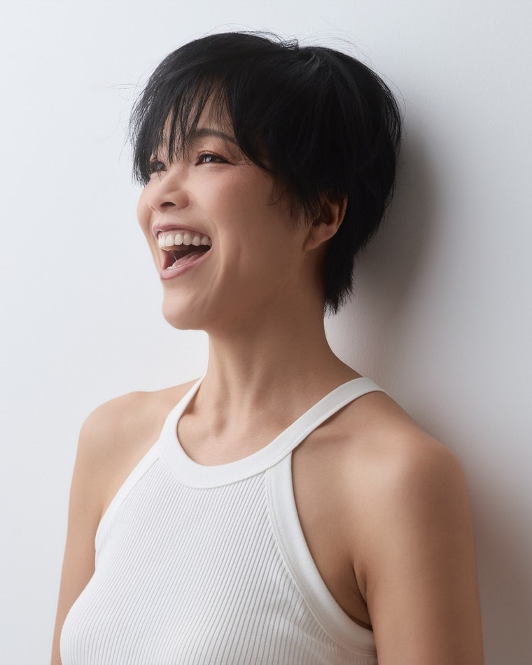

講師 レムケなつこ
ドイツ在住 オーガニック教育の専門家
「知っているのに、できない」が、仲間とできるに変わる90日。
ひと目で
あなたへ
ここまで、たくさん調べて、考えてきたと思います。迷ってきたのは、それだけ家族と自分の毎日を大切に考えてきたからかもしれません。
この約90日は
表示や認証を知っても、売り場では、値段も、家族の好みも、近くで買えるものも違います。知ることと、暮らしの中でできることの間には、もう一つ練習が要ります。
この約90日は、家族の健康を大切にしながら、大切な家族との豊かな人生のために、オーガニックを実際の暮らしで続けていくための、実践の学びです。
もう一つ
私は、オーガニックは、すべての命が幸せになる仕組みそのものだと思っています。
オーガニックは、「自分や家族にとっていいものを選ぶ」だけではありません。健康を大切にしながら、つくる人や自然、生きものとのつながりにも目を向けていく。そして、無理なく楽しみながら続けていく。そんな一人ひとりの小さな選択が、未来の世代や、私たちが大切にしたい子どもたちの暮らす世界にもつながっていきます。
自分や家族の健康を大切にする。
周りとの関係も大切にする。
その積み重ねが、未来の世代にもつながっていく。
このモニターでは、知識として学ぶだけではなく、それを実際の暮らしの中でどう続けていけるかを、みんなで試していきます。
約90日のあと
効果をお約束するものではありません。選ぶための見方を知り、約90日、暮らしの中で試してみるモニターです。
始まる前の3回
各回45分、オンライン。私が15〜20分お話しし、そのあと、ご自分の一品や暮らしに当てはめて、共有・質問の時間をとります。事前の宿題はありません。
毎回の最後に、共有・質問
今回試す一品／今、迷っていること／やってみてどうだったか
時間の範囲で、共有していただきます。同じような迷いを聞くことで、「迷っているのは私だけではなかった」と気づける時間にもします。
各回のあとに、短いフォローメールを一通ずつお送りします（11月19日・12月9日・1月22日）。
実践の30日
1月25日から2月23日までの30日間は、「今週の問い」を一つ載せた短いメールを、毎週月曜にお送りします（計5通）。買い物の中で、一品を試しながら考えます。
日程
第0期
これは、完成済みの成功プログラムではありません。最初の回です。まだ、ここを経験した方の声もありません。
みなさんがどこで迷い、何を知ると選べるようになり、どこで続けにくくなるのか。15日目と30日目の振り返りで教えていただきながら、より良い形にしていきます。参加費を、通常より抑えているのも、そのためです。
いただいた振り返りや、期間中のご意見は、2027年5月から予定している暮らし向け3か月コースをよりよくするために使わせていただきます。お名前など個人が分かる形では使いません。ホームページ、メール、SNSなど外への発信で文章を引用させていただきたいときは、その時点であらためてご本人に確認します。
こんな人におすすめ
90日間、一緒に実践する場はご提供します。そのうえで、進め方は皆さんの声を聞きながら、よりよく育てていきます。
第0期は、一人ひとりの声を聞きながら進めたいので、8名で募集します。
アンケート・インタビューの内容を外部に掲載する場合は、必ず事前にご本人の確認をいただきます。
中身
講師

ドイツ在住 オーガニック教育の専門家。
ドイツ法人 Institut für Organic Business GmbH（IOB）代表。
途上国で、現代の奴隷と言われるような暮らしの人たちに出会いました。
その暮らしが、私たちの食生活とつながっていました。
学術論文を調べ続けて、オーガニックという「人が幸せになれる仕組み」にたどり着きました。
これを広げることが、日本の社会を豊かにすると思っています。
「オーガニックが、あたりまえ。」な社会を、ともにつくっていきます。
条件
| 期間 | 2026年11月19日（木）〜2027年2月23日（火）の約90日間うち、2027年1月25日（月）〜2月23日（火）が、毎週のメールで進める30日間の実践です。 |
|---|---|
| 始まる前に集まる日 | オンライン3回・各45分。各回、私が15〜20分お話しし、そのあと、ご自身の一品や暮らしに当てはめて共有します。事前の宿題はありません。11月19日（木）・12月9日（水）・2027年1月22日（金）／日本21:00〜21:45・ドイツ13:00〜13:45 |
| 参加費 | 日本在住 €45／EU在住 €49（どちらも税込）お住まいの地域で税が異なるため、金額を分けています。 |
| 約90日の間にあること | 各回のあとの短いフォローメール（3通）／1月25日からの毎週月曜のメール（計5通）／15日目（2月8日）・30日目（2月23日）の3分ほどの振り返り。1月25日からの30日間の途中で、新しく集まる日はありません。 |
| 実践グループ | 4人1組のLINEグループで、90日間、仲間と小さなチャレンジを続けます（情報交換程度でも大丈夫です）。グループの進め方の詳細は、開始前にご案内します。 |
| 定員と開催 | 最大8名。11月9日（月）の時点で、お支払い済みの方が4名以上なら開きます。4名に届かなかった場合は、今回は開かず、お支払いいただいた参加費を全額お返しします。 |
| 受付 | 最終日は11月9日（月）。8名のお支払いが完了した時点で、それより前でも受付を終了します。 |
| お席 | お申し込みだけでは、お席は決まりません。お支払いが完了した順に決まります。受付の終了とお支払いが行き違い、8名を超えてお支払いがあった場合は、その方へ全額お返しします。 |
| お支払い | お申し込みフォームのボタンを押すと、お申し込みを送信して、そのまま決済のページへ移動します。お住まいの地域と同じ金額のボタンをお選びください。メールで決済のリンクはお送りしません。 |
| お返しするとき | 4名に届かず開けない場合、こちらの都合で開けなくなった場合は、お支払いいただいた参加費を全額お返しします。お返しは、お支払いと同じ方法で行います。 |
| お支払い後の取り消し | お支払い完了後は、ご本人の都合による取り消し・返金はお受けしません。 |
| 欠席・アーカイブ | できるだけライブでのご参加をおすすめしています。実際の疑問をその場で確認したり、ほかの参加者の気づきを聞いたりできるためです。ご都合が合わない回は、各回のアーカイブ動画を、パスワード付きの専用ページで後日ご覧いただけます。視聴期限は、3回とも2027年3月23日までです。ライブの別日開催・振り替えはありません。 |
| 対象 | 日本在住、またはEU加盟国在住の方 |
| お問い合わせ | school@iob.bio |
質問
申込
選ぶための見方を知って、一品でやってみたい。そう感じた方は、こちらからお申し込みください。
お問い合わせ：school@iob.bio